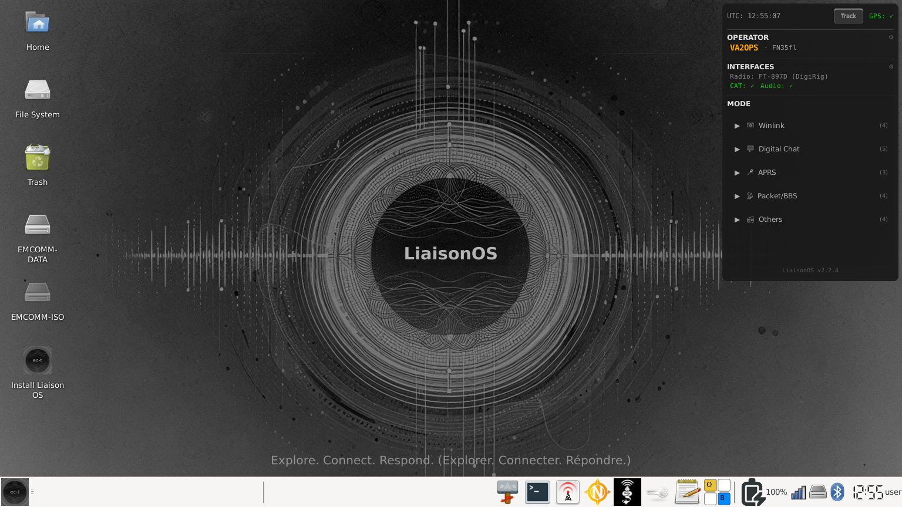

Ce que c'est
LiaisonOS est un système d'exploitation Linux prêt à déployer, pré-chargé avec tout ce dont un radioamateur a besoin pour les communications numériques d'urgence. Démarrez depuis une clé USB et vous êtes opérationnel — aucune installation requise.
Basé sur Debian 13 (Trixie) pour des cycles de support plus longs, sans restrictions de marque sur la redistribution d'images ISO, et avec accès direct aux dépôts de paquets Debian.
Deux modes de déploiement : démarrage USB live (avec persistance complète) ou installation permanente via Calamares.

Fonctionnalités principales
Nouveautés v2.2.5
Téléchargement des cartes — Cloudflare R2
Les tuiles de carte se téléchargent maintenant avec une progression en temps réel affichant le compteur d'octets et le pourcentage par tuile. VARA HF passe à 500 Hz par défaut. Position par défaut de et-predict-app mise à jour.
Précédente — v2.2.4
Répertoire BBS QtTermTCP — liste filtrable des stations BBS connues avec filtrage automatique bande/VARA/UTC, QSY à la sélection via rigctld ou FLRig, éditeur de stations et stockage local SQLite.
Précédente — v2.2.3
Correction de bogue — Une erreur de script dans la v2.2.2 avait corrompu plusieurs fichiers overlay (wrapper-rigctld.sh, wrapper-gpsd.sh, et-audio, et-log, profils audio radio), brisant rigctld, gpsd et et-supervisor au démarrage. Tous les fichiers affectés ont été restaurés.
VARA HF/FM & VarAC
VARA HF/FM — Pré-installé
VARA HF et VARA FM sont pré-installés avec la permission écrite de José Alberto Nieto Ros (EA5HVK). Les utilisateurs doivent acheter leur propre licence sur rosmodem.wordpress.com pour débloquer la pleine vitesse. La version pré-installée fonctionne en mode démo jusqu'à l'enregistrement.
VarAC — Pré-installé
VarAC est pré-installé et prêt à l'emploi au premier démarrage. Il fonctionne via Wine avec VARA HF/FM pour une configuration complète de communications numériques. Licence présentée au premier lancement (accord de distribution limitée avec 4Z1AC).
16 modes opérationnels
Winlink
- VARA HF
- VARA FM
- Packet
- ARDOP
Chat
- JS8Call
- VarAC
- Fldigi
- Chattervox
- Chattervox BT
BBS
- Paracon
- QtTermTCP
- Serveur BBS (LinBPQ)
APRS
- YAAC Client
- YAAC BT
- Digipeater APRS
Autre
- FT8/FT4 (WSJT-X)
- Direwolf KISS TNC
Radios supportées
L'interface DigiRig Mobile est supportée et étend considérablement la compatibilité radio — toute radio fonctionnant avec DigiRig fonctionne avec LiaisonOS. Le tableau ci-dessous liste les radios testées directement par l'équipe. Pour la liste complète de compatibilité DigiRig, visitez digirig.net.
| Fabricant | Modèles | Interface |
|---|---|---|
| Icom | IC-705, IC-7100, IC-7200, IC-7300, IC-9700 | USB CAT + audio |
| Yaesu | FT-710, FT-857D, FT-891, FT-897D, FT-991A, FTX-1 | USB CAT + audio |
| Xiegu | X6100, G90 | USB / DigiRig |
| Elecraft | KX-2 | DigiRig Mobile |
| QRP Labs | QMX | USB CAT |
| BG2FX | FX-4CR | USB CAT + audio |
| Kenwood | TH-D74, TH-D75 | Bluetooth KISS TNC |
| BTECH | UV-PRO | Bluetooth KISS TNC |
| VGC | VR-N76 | Bluetooth KISS TNC |
Pourquoi Debian ?
Aucune restriction de marque — nous pouvons distribuer librement des images ISO pré-construites. Cycles de publication plus longs et stables (3 à 5 ans LTS). Accès direct aux dépôts Debian incluant le Debian Ham Radio Pure Blend — JS8Call, WSJTX, fldigi, Direwolf tous correctement empaquetés. Communauté sans contraintes corporatives.
L'esprit radioamateur
Ce projet n'est pas un produit fermé. C'est un point de départ — une base réutilisable et personnalisable que les clubs radio, groupes régionaux, organisations d'urgence et opérateurs individuels peuvent forker et adapter à leurs besoins. Partagez les connaissances, bâtissez la communauté.
Contribuer
Projet open-source. Les contributions, rapports de bogues et demandes de fonctionnalités sont les bienvenus.
Remerciements
- The Debian Ham Radio Team — Maintenance des paquets radioamateur
- José Alberto Nieto Ros (EA5HVK) — Développement du modem VARA HF/FM
- Irad Deutsch (4Z1AC) et l'équipe VarAC — Application de clavardage VarAC
- Andrew Pavlin (KA2DDO) — YAAC (Yet Another APRS Client)
- Martin Hebnes Pedersen (LA5NTA) — Pat Winlink
- John Wiseman (G8BPQ) — LinBPQ / QtTermTCP
- Martin F N Cooper — Paracon
- David Freese (W1HKJ) — fldigi
- Joe Taylor (K1JT) et l'équipe WSJT — WSJT-X
- Gaston Gonzalez (KT7RUN) — Concept original EmComm Tools OS Community
Licence
Ce projet est une œuvre dérivée d'EmComm Tools OS Community, licenciée sous la Microsoft Public License (Ms-PL). Conformément à la section 3(C) de la Ms-PL, nous conservons tous les avis de droit d'auteur, de brevet, de marque et d'attribution du logiciel original. Le passage d'Ubuntu à Debian élimine les restrictions de marque Ubuntu qui empêchaient auparavant la distribution d'images pré-construites.